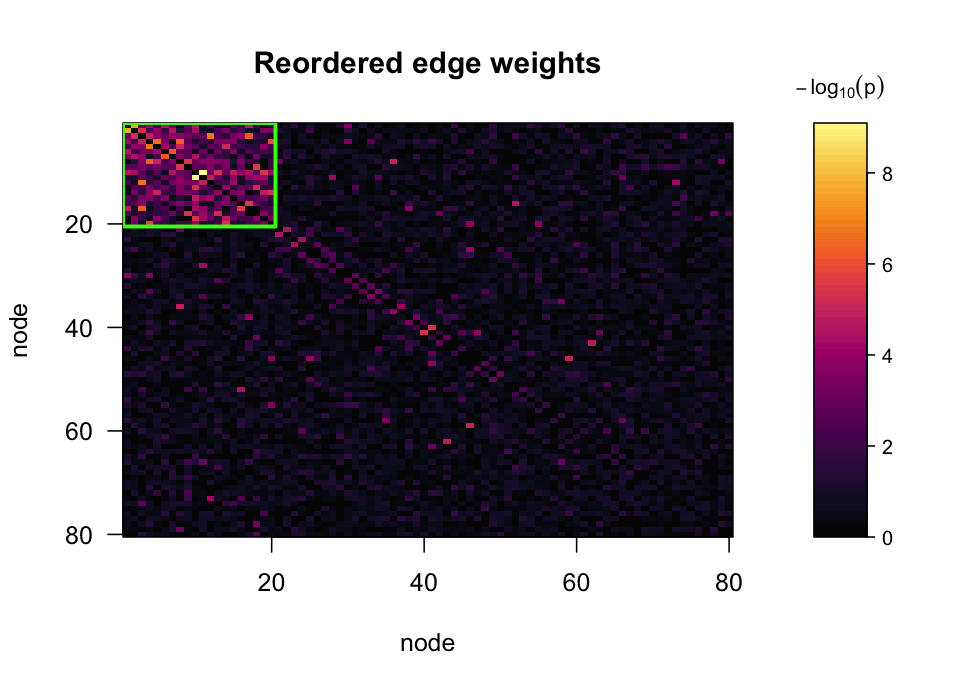
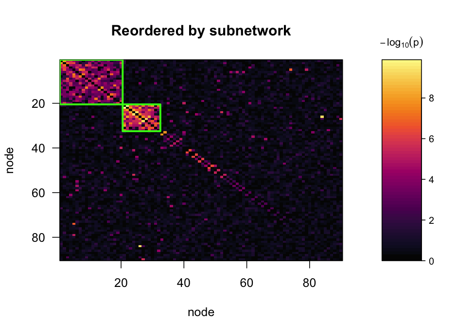
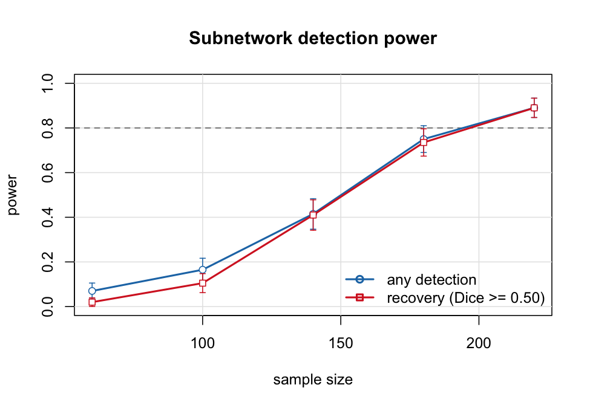

subnetr extracts covariate-related subnetworks from whole-brain connectome data and provides simulation-based power analysis for study design. It implements the subnetwork detection framework of Chen et al. (2023), which builds on the adaptive dense subgraph discovery model of Wu et al. (2022).
A covariate is typically related to a number of edges connecting multiple brain areas in an organized structure, but neither the covariate-related edges nor that structure is known in advance. Mass-univariate analysis applies a single threshold to every edge and returns a set of unrelated significant edges, recognizing no network topology; it also incurs a severe multiple-comparison burden. Subnetwork detection instead identifies node sets whose mutual connections are jointly associated with the covariate. Edge-wise test statistics are screened into a sparse weighted graph, an adaptive density objective is maximized by a greedy algorithm to extract candidate subnetworks, and a permutation test assigns each of them a p-value controlling the family-wise error rate.
The extraction and permutation machinery is implemented in C++, which makes it practical to refit the procedure thousands of times and therefore to estimate power by simulation.
Basic analysis
The input is subject-level connectivity: an n_subject by n_edge matrix of vectorized connectomes, together with a predictor and any nuisance covariates.
library(subnetr)
sim <- simulate_fc(n = 120, n_nodes = 80, cluster_size = 20,
f2 = 0.06, seed = 42)
W <- sim$W # -log10 p per edge, from edge_stats()
fit <- subnet(W, n_perm = 999, seed = 1)
fit
#> Predictor-associated subnetworks
#>
#> nodes : 80 edges: 3160
#> objective : generalized (lambda = 0.50)
#> threshold : 1.41 (10.0% of edges retained)
#> permutations: 999 alpha: 0.05
#> tuning : calibrated criterion
#>
#> subnet size edges density p_value significant log10_stat
#> 1 20 146 0.768 0.001 TRUE -104.5
#> 2 44 82 0.087 1.000 FALSE 0.0
#> 3 4 2 0.333 1.000 FALSE -0.9
#>
#> 1 of 3 subnetworks significant at FWER 0.05.
#> P-values are max-statistic permutation p-values and are already
#> family-wise-error corrected; do not adjust them again.For observed data, the first two lines are replaced by
W <- edge_stats(fc, x = predictor, covariates = cbind(age, sex, motion))where fc is either an n_subject × n_edge matrix or an n_node × n_node × n_subject array. Each edge is regressed on the predictor with the covariates partialled out, and the returned matrix holds the resulting edge-wise evidence.
The reported p-values are already adjusted for multiplicity across all extracted subnetworks and should not be adjusted again.
Visualizing the result
plot(fit, what = "both")
plot of chunk heatmap
The left panel shows the adjacency matrix in the original node order, in which the subnetwork is distributed across arbitrary indices and not apparent. The right panel shows the same matrix with nodes reordered so that each extracted subnetwork occupies a contiguous diagonal block; significant blocks are outlined. Both panels use a common colour scale, labelled with the statistic displayed — here -log10(p), since that is what edge_stats() returned. Use weight_label to set the label for matrices constructed by other means.
Both panels are worth inspecting. Reordering is a permutation of node labels, and a permutation alone can impose apparent structure on noise; the comparison between panels indicates whether the block is substantive. The permutation test formalizes that comparison.
Node membership is available directly:
fit$subnetworks[[1]] # node indices of the leading subnetwork
#> [1] 7 47 35 21 19 43 61 71 58 73 24 45 33 8 17 23 37 48 42 74
table(membership(fit)) # 0 = background
#>
#> 0 1
#> 60 20Multiple subnetworks
The method does not assume a single subnetwork. In the following example two subnetworks of different size and effect size are planted, and both are recovered as separate blocks.
sim2 <- simulate_fc(n = 150, n_nodes = 90, cluster_size = c(20, 12),
f2 = c(0.08, 0.14), seed = 4)
fit2 <- subnet(sim2$W, n_perm = 999, seed = 2)
res <- as.data.frame(fit2)[, c("subnet", "size", "density", "p_value",
"significant")]
res$density <- round(res$density, 2)
res
#> subnet size density p_value significant
#> 1 1 20 0.85 0.001 TRUE
#> 2 2 12 0.89 0.001 TRUE
#> 3 3 8 0.43 0.676 FALSE
#> 4 4 11 0.20 1.000 FALSE
#> 5 5 8 0.25 1.000 FALSE
#> 6 6 7 0.24 1.000 FALSE
#> 7 7 9 0.17 1.000 FALSE
plot(fit2, what = "both")
plot of chunk multi-heatmap
Extracted subnetworks are disjoint by construction: each peeling round passes the nodes it removes to the next round, so every node belongs to exactly one block. The p-values are corrected jointly across all blocks returned, whether or not they reach significance, because each permutation repeats the entire extraction and contributes only its most extreme block. Reporting two significant subnetworks among seven extracted therefore incurs no additional multiplicity penalty.
Two qualifications apply. The null edge probability is estimated over the whole graph and so includes edges carrying signal, which renders the test conservative when one subnetwork is considerably stronger than another. A partition also cannot represent overlapping subnetworks: a node belonging to two systems is assigned to whichever block claims it first. See vignette("multiple-subnetworks").
Power analysis
power_curve() estimates power by simulating the complete procedure, permutation test included, over a grid of sample sizes.
pw <- power_curve(n = c(30, 60, 100, 150, 220),
n_nodes = 80, cluster_size = 15, f2 = 0.025,
n_sim = 200, n_perm = 199, seed = 7, progress = FALSE)
pw
#> Power analysis for subnetwork detection
#>
#> nodes : 80
#> planted subnets : 15 (sizes)
#> effect size f2 : 0.025
#> rho_in / rho_out: 0.90 / 0.020
#> replicates : 200 permutations: 199 alpha: 0.05
#> Dice cutoff : 0.50
#>
#> n power recovery dice n_sig
#> 30 0.065 (0.017) 0.020 (0.010) 0.024 0.06
#> 60 0.155 (0.026) 0.125 (0.023) 0.096 0.16
#> 100 0.605 (0.035) 0.595 (0.035) 0.488 0.60
#> 150 0.955 (0.015) 0.955 (0.015) 0.853 0.96
#> 220 1.000 (0.000) 1.000 (0.000) 0.960 1.00
#>
#> Power and recovery show the estimate with its Monte Carlo standard
#> error in parentheses.
plot(pw, target = 0.8)
plot of chunk power
Two quantities are reported. Power is the probability of declaring any subnetwork significant. Recovery is the probability of identifying one that overlaps the true subnetwork with Sørensen–Dice coefficient at least dice_cut. Recovery is the more stringent criterion, and the appropriate one when the inferential claim concerns which nodes are involved.
required_n(pw, target = 0.8)
#> [1] 128.4722Effect sizes are specified as Cohen’s f^2 per edge. The argument rho_in gives the proportion of within-subnetwork edges that carry the effect; the default of 0.9 reflects the expectation that a subnetwork is not uniformly affected.
Method
Edge-wise inference. Each edge of the connectome is fitted by a general linear model of the connectivity measure on the covariate of interest, adjusting for nuisance covariates. The inferential results are stored in a matrix W = {w_ij} with w_ij = -log10(p_ij), which forms the input to subnetwork extraction. Any valid statistical model producing such a matrix may be used.
Screening. W is thresholded at a value r, edges below it being set to zero. What remains is a sparse weighted graph of suprathreshold edges.
Extraction. Covariate-related subnetworks are extracted by the greedy algorithm conventional in dense subgraph discovery: the node of minimum degree is removed at each iteration, and the node-induced subgraph maximizing the objective over the resulting sequence is retained. Wu et al. (2022) define the adaptive density function
f(S; lambda_W) = |W(S)| / |S| ^ lambda_W, lambda_W in [1, 2]for a node set S carrying total suprathreshold edge weight |W(S)|, which interpolates between the two classical criteria: lambda_W = 1 gives the degree density f1, the objective of Charikar (2000), and lambda_W = 2 gives the area density f2. Equivalently, Chen et al. (2023) write the criterion as an ℓ0 graph norm shrinkage penalty, log||U||_1 - lambda_0 log||U||_0, which rewards edge weight within a subnetwork while penalizing its size.
subnetr parameterizes this family as
w / n ^ (2 * lambda)for a set of n nodes carrying weight w. This is Chen et al.’s lambda_0 and half of Wu et al.’s lambda_W, so lambda = 0.5 is degree density and lambda = 1 is area density. Larger values favour smaller, denser subnetworks; lambda = 0 places all nodes in a single subnetwork. Values between 0.5 and 0.7 are the usual working range. Nodes removed in one round are passed to the next, so subnetworks are extracted in decreasing order of density, and nodes belonging to none of them are returned as background singletons.
Inference. Testing several extracted subnetworks simultaneously requires comparing subnetworks of different densities and sizes on a common scale. Chen et al. (2023) address this with a concentration bound on the probability of observing a subnetwork of size v0 and density γ in a graph of overall density p. subnetr instead uses the exact upper-tail binomial probability of a subnetwork containing at least as many suprathreshold edges as observed, given the overall suprathreshold edge probability, which serves the same purpose without the bound’s slack: subnetwork size enters as the binomial sample size, so subnetworks of differing size are directly comparable.
The null distribution is obtained by permuting edge weights across the graph and repeating the entire extraction, retaining the most extreme subnetwork statistic from each permutation. This is a max-statistic (Westfall–Young) procedure and controls the family-wise error rate over all extracted subnetworks without further correction.
Parameter tuning
Neither the screening threshold nor the size penalty should be fixed arbitrarily. Wu et al. (2022) estimate lambda by maximizing a likelihood under a stochastic block model, and treat the threshold r as a random variable with prior g(r), integrating the likelihood with respect to it rather than selecting a single value. subnetr follows the same principle over a grid, and the default is to do it for you.
The default: supply nothing
threshold and lambda default to NULL, so
fit <- subnet(W, n_perm = 999)runs tune_subnet() over a grid of five lambda values by five thresholds, fits at the selected pair, and — the part that matters — records that the parameters were selected from the data, so the permutation null is built accordingly.
Each candidate pair is scored by the log-likelihood ratio of a block model against a homogeneous model, then standardized against that pair’s own permutation null. Standardization is what makes the grid comparable: a looser threshold mechanically produces a denser graph, more blocks and a larger raw likelihood, so the unstandardized statistic would simply select the loosest setting on offer.
Inspecting the choice
fit$tuning
#> Threshold / lambda tuning
#> criterion : calibrated (25 permutations per grid point)
#> grid : 5 lambda x 5 threshold
#> selected : lambda = 0.50, threshold = 1.41
#>
#> Top grid points:
#> lambda prob threshold n_clusters lr z
#> 0.5 0.90 1.410 3 286.2 40.47
#> 0.7 0.90 1.410 13 327.6 24.37
#> 0.8 0.90 1.410 14 299.2 22.70
#> 0.7 0.95 2.293 9 273.9 22.17
#> 0.5 0.95 2.293 4 266.9 17.86Selection is on z, not lr. In the table above the second row has the higher raw likelihood ratio but a lower z, precisely the mechanical effect that standardization removes. The full grid is available as fit$tuning$grid, a data frame with one row per candidate pair.
Adjusting the grid
fit <- subnet(W, tune = list(probs = c(0.95, 0.98, 0.99),
lambda_grid = c(0.5, 0.6, 0.7),
n_perm = 40))probs are quantiles of the observed edge weights, defaulting to 0.90, 0.95, 0.975, 0.99, 0.995. The binding constraint is that screening must retain at least as many edges as the target subnetwork spans: a 20-node subnetwork in an 80-node connectome spans 190 of 3160 edges, about 6%, so a 99.5th-percentile threshold cannot recover it at any sample size. As a rule of thumb the most stringent quantile in the grid should still retain a small multiple of c(c-1)/2 edges for the smallest subnetwork c of interest.
lambda_grid defaults to seq(0.5, 0.9, 0.1), the range used in the source papers. The n_perm here is the number of calibration permutations per grid point and is unrelated to the n_perm of the test itself; 25 is enough to rank candidates.
Setting criterion = "likelihood" skips the calibration permutations altogether. It is faster, but biased toward the extremes of the threshold grid, which is the reason calibration exists.
Why tuning changes the null
Selecting the threshold from the same matrix that is subsequently tested is a selection effect. Ignoring it approximately doubles the type-I error rate, so that a nominal 5% test operates at about 10%. subnet() addresses this by having each permutation repeat the same selection the observed data underwent:
| Null distribution | Type-I error at α = 0.05 |
|---|---|
| uncorrected | 0.10 |
subnetr default ("retune") |
0.04 |
This costs one extraction pass per grid point per permutation, which is affordable because extraction is compiled.
Reusing or fixing parameters
To inspect the tuning before fitting, or to reuse one search across several analyses, pass the result object itself:
tn <- tune_subnet(W)
fit <- subnet(W, tuning = tn, n_perm = 999)Pass the object, not its contents. The correction needs the grid that was searched, and
subnet(W, threshold = tn$threshold, lambda = tn$lambda) # uncorrectedsupplies the same two numbers with no record of where they came from, so the null is built as though they had been chosen in advance. subnet() cannot detect this, which is why tuning = exists.
When the parameters genuinely were fixed in advance — from prior work, say — supplying them as numbers is correct, and the ordinary null is used automatically:
fit <- subnet(W, threshold = 2.5, lambda = 0.6, n_perm = 999)Performance and reproducibility
The screened graph is sparse by construction, and the compiled core is written accordingly: peeling operates on a compressed sparse representation with a lazily updated minimum-degree heap, and permutations place only the surviving edges rather than reconstructing a dense matrix. Indicative single-core timings:
| Nodes | Edges | 200-permutation test |
|---|---|---|
| 100 | 4,950 | 0.01 s |
| 200 | 19,900 | 0.08 s |
| 400 | 79,800 | 0.41 s |
A 200-replicate power curve at 100 nodes completes in a few seconds.
Each permutation seeds its own random stream from its index, so results depend only on seed and never on n_cores or on how the work is divided among workers. Calling set.seed() before an unseeded call is sufficient for reproducibility. Setting n_cores > 1 uses OpenMP threads where the toolchain provides them (see has_openmp()) and forked R workers otherwise.
References
Chen S, Zhang Y, Wu Q, Bi C, Kochunov P, Hong LE (2023). Identifying covariate-related subnetworks for whole-brain connectome analysis. Biostatistics, kxad007. doi:10.1093/biostatistics/kxad007
Wu Q, Huang X, Culbreth AJ, Waltz JA, Hong LE, Chen S (2022). Extracting brain disease-related connectome subgraphs by adaptive dense subgraph discovery. Biometrics 78(4), 1566–1578. doi:10.1111/biom.13537